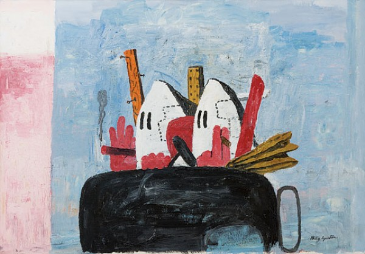
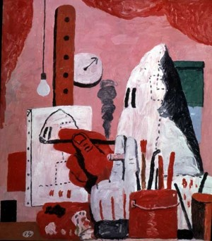
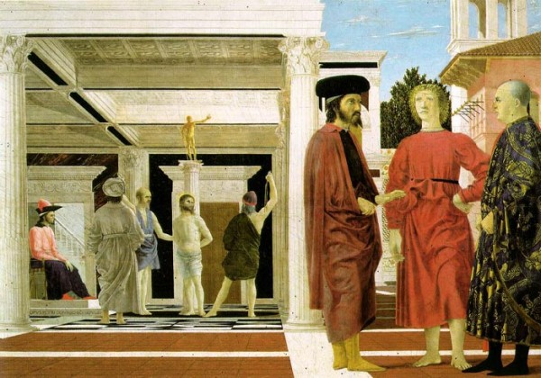
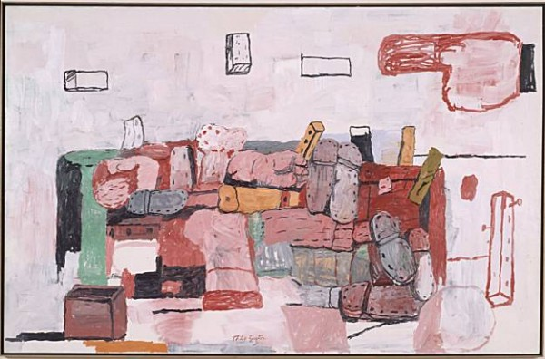
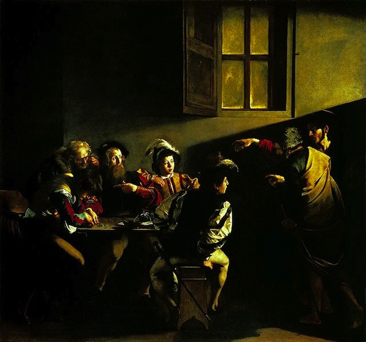
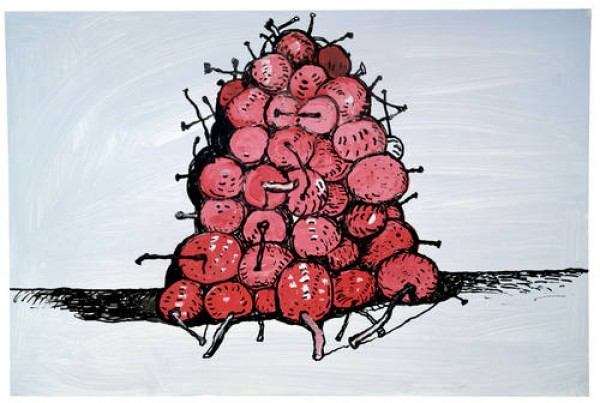

-
Guston Goes Electric
by Andrew Martin June 8, 2011
In the final room of Abstract Expressionist New York a painting called Edge of Town by Philip Guston bids visitors farewell. After rooms filled with intense, abstract canvasses by Pollock, Rothko, Newman and Guston himself, in an earlier guise, we come to two cartoon Klansmen, sitting in a sketchily painted black car, smoking cigars through fat pink fingers. It’s a startling, aggressive picture that uses its absurdity as a weapon. The exaggerated contours and bright colors recall a friendly comic strip. But something menacing is afoot: these are guys in white hoods, and their cargo is a couple of nail-studded two-by-fours. The figure on the right, clenching his cigar between his middle and index finger, seems to be flipping the viewer the bird. The message is clear: We’re outta here. Goodbye to all that. See you in hell.
Placing this painting at the end of the exhibition recreates its historical moment. A major painter of the loosely defined New York School, Guston boldly returned to figurative painting in 1970 after decades of non-representational work. In the new pictures, the Klan figures, or “hoods” as he called them, drove and wandered through crudely rendered landscapes littered with recurring objects: shoes, bottles, clocks, light bulbs. In The Studio, a hood paints a self-portrait; in Bad Habits, a blood-spattered hood penitently whips himself—and a friend—as a bulbous liquor bottle looks on. Critics were scandalized by the rejection of abstraction and the crudity of style. Guston was exiled to the hinterlands of the art world, where he painted anxious dark cartoons and crept steadily back into favor until his death in 1980.
Before his final break with abstraction in the late sixties, Guston’s career was closely entwined with the broad narrative of Abstract Expressionism. Born in Montreal in 1913, he moved with his Ukrainian immigrant parents to Los Angeles when he was a child. A classmate and friend of Jackson Pollock at Manual Arts High School, he came to New York in 1936 and painted murals for the WPA along with Robert Motherwell and Mark Rothko. In the fifties, his early figurative paintings—including Conspirators, his first depiction of Klansmen, and one with a debt to El Greco—gave way to pictures of intense, brooding abstraction. Blurred, thickly-layered masses of color rise from clotted backgrounds and emerge into the viewer’s personal space. His 1966 exhibition at the Jewish Museum served as both the culmination and end-point of his career’s middle phase, a time when he counted Rothko, de Kooning, and Barnett Newman as friends and competitors, in addition to Pollock.

Secluding himself in Woodstock, New York, Guston re-emerged at the Marlborough Gallery in 1970 with his infamous hoods. Like Dylan going electric at the Newport Folk Festival in 1965, Guston’s figurative turn remains the centerpiece of his personal mythology. In Collected Writings, Lectures, and Conversations, Guston returns to the event again and again. “The art critic from the New York Times, Hilton Kramer, gave me a whole page,” says Guston at a conference in 1978. “He called it ‘From Mandarin to Stumblebum’ [actually “A Mandarin Pretending to be a Stumblebum”]… He did a real hatchet job.” When Willem de Kooning saw the show, the artist recalled in 1979, he told him “You know Philip, what your real subject is? It is freedom!” And I said, “That’s right, Bill! You’ve got it!”
In his later years Guston tried to explain, with varying degrees of success, what he was trying to do in his figurative works. He attributes the “hoods” to a kind of morbid curiosity and identification, a literary interest that pervades his writing: “They are self-portraits. I perceive myself as being behind the hood,” he says. “The idea of evil fascinated me, and rather like Isaac Babel, who had joined the Cossacks, lived with them, and written stories about them, I almost tried to imagine that I was living with the Klan. What would it be like to be evil? To plan and plot. Then I started conceiving an imaginary city being overtaken by the Klan. I was like a movie director. I couldn’t wait.”
Guston wrote that “the KKK has haunted me since I was a boy in LA.” As a young man he experienced their violence first-hand, when Klansmen acted as strikebreakers in California in the 1930s. It’s possible that Guston’s cartoonish depictions of the hoods were an attempt to both harness and neutralize the power that these figures held over him. These guys may look scary, the paintings imply, but they’re cartoons. The cigars—Guston was a constant smoker—are the visual equivalent of a peek behind the mask. They aren’t monsters; they’re just Guston, playing all the parts in his own private movie.
In studio notes made to himself, Guston connected these pictures to “medieval and Renaissance paintings, the flagellation pictures of Piero, Giotto, and Duccio. Violence in a formal painting.” Italian painters, especially Piero della Francesca, appear repeatedly in his lectures and conversations. “I don’t mean to be perverse, but I would rather look, there’s no question, at Piero’s Flagellation painting in Urbino, or the Baptism painting at the National Gallery [in London], than I would any modern painting, “ Guston said in 1966. “All I can tell you is I’ve had a reproduction on my wall of these two paintings for about twenty-five years. In the kitchen, where you really look at things.” After being immersed in Guston’s edgy surrealism, it can be startling to look at Piero della Francesca’s Madonna of Mercy and see a dark-hooded penitent there, kneeling at Mary’s feet. It’s as if Guston has reached back and mischievously dropped one of his hoods into a Renaissance masterpiece.
That painting’s influence is noted in the catalog for Philip Guston: Roma, a recent show at the Phillips Collection in Washington D.C. Roma is the first exhibition to collect the drawings and paintings Guston made at the American Academy in Rome from 1970 to 1971 while on holiday from his bad New York press. These are, for the most part, not major works. They utilize a restricted palette of pinks, whites and blacks; and local motifs—trees, ruined walls, a giant stone foot—are depicted repeatedly with minor variations. The hoods have made the journey overseas, and have become pink and rounded in the process—they are looking at paintings, exploring and blending into the landscape, floating over the ground like Pac-Man ghosts. There is little threatening about these pictures. In the mellow confines of the American Academy, they’re downright cute.
Guston phased out the hoods after this series, and there’s a palpable anxiety about their fate. In Untitled (To Harold Rosenberg) from 1971, a group of hoods, ranging in color from light pink to dark red, huddle in a corner delineated by a length of rope. Red squares in the background suggest windows. The right side of the picture is consumed by a massive pink hand pointing an accusatory finger at the largest hood. Perhaps the gang is finally getting punished for whatever they did with those two by fours in Edge of Town. Given Guston’s agitated, self-referential nature, the hand of judgment might well be that of the New York critical establishment, who shamed his avatars into retreat. In an essay in the Roma catalogue, Peter Benson Miller draws a comparison to Caravaggio’s The Calling of Saint Matthew, in which a red-sleeved arm points picks Matthew out of a motley crew, rousing him to join Christ. The integration of a Renaissance motif into Guston’s typically antic scenario is emblematic of this period of his work. It presents an awareness of the masters’ compositional methods but one that nevertheless insists on its own inscrutable logic. Guston borrows elements that suggest specific meanings—accusation, an appeal to faith—but the color-blotched hoods remain opaque.
The disembodied, accusatory hand also appears in Cornered, where a cowed hood, his lower half seemingly steeped in blood, stands in judgment on a platform surrounded by the oversized soles of shoes. Here, and in another painting, Corned from the same year, white fingers clutching a cigar poke up from the bottom of the frame. It’s a cartoonist’s gesture—the cigar, with its grey point of ash, resembles the giant eraser-tipped pencil bearing down on Daffy Duck in a Looney Tunes short. That, and Massacio’s Trinity, where God rises behind both the crucified Christ and a memento mori skeleton on a separate, lower level. But rather than looming down from above, Guston surveys from below, a slyer, more humble position.
By placing himself at a distance from his heroes Guston does more than simply acknowledge a debt. As in Beckett’s invocations of Dante in More Pricks Than Kicks, Guston consciously draws attention to the absence of the master being referenced. Summoning the Gods in such a crude style hints at Guston’s pessimistic view of contemporary art. Unable to compete with history, his response is a regression of his own technique. Where the masters strove for verisimilitude, Guston will paint lumpy triangle shaped people, bulbous heads without bodies, and gangly stick men. He will retain the gestures of moral seriousness, but complicate them with a weird, even vulgar sense of humor.
Hilton Kramer couldn’t countenance Guston’s insistence on undercutting his own seriousness of purpose. In a 1977 review he recognized
the effort to bring a certain mode of mockery and humor into alignment with a vision of something monumental. But the mockery—for this observer at least—is not compelling, and remains something separate from the feeling generated by the way the paintings are executed.
The mockery can’t be separated out, though, and with time and distance, Guston’s self-deflating attitude simply announces the end of AbEx’ totemic and imperious reign.
In 1979 Guston described his interest in figuration to Jan Butterfield in formal terms:
“Working with figuration the way I am doing now is a purely imaginative projection, of course, because I don’t paint from things, you know, as you do when you look at an object. It is all imagined with me. I think you enter into a really complex, almost insoluble “contest” between meaning and structure—plastic structure—and that is what I miss in totally nonobjective painting: the lack of that contest, when it becomes too possible. Look there is something about dealing with the impossible that is exhilarating and wonderful!”
This encounter with the impossible gives Guston’s best paintings their power. The late pictures, in particular, convey difficult messages using a cryptic personal language. Ross Feld, in his excellent Guston in Time, writes about the strange forces at play in the overtly cheerful painting Cherries, in which a bountiful bunch of fruit seems to be gathered eagerly for a group portrait. “The cherries are situated on black water, the melancholy essence that Guston always paddles in, with lengthening hatch marks given off by the middle cherry as reflection,” writes Feld. “The black cherry at the rear is an outcast (it certainly looks like a bomb) but it too still adheres good-naturedly to the society. For with one exception the cherries touch each other and are communal, with the proximity as well as the isolation of neighbors. The same one mouth, after all, will devour them all.”
Feld’s analysis is fanciful, but the work encourages it. Take the self-portrait Painting, Smoking, Eating, in which a bulbous-headed Guston cartoon lies in bed with the covers pulled up, a paintbrush in his hand, a cigar in his mouth, with a plate of French fries sitting on his chest. Guston is drawing attention to an image of himself as a slob, as a glutton, as a layabout. But there is also a mock-heroism at work: look at all the things he can do at once! Guston at his most playful isn’t far removed from Guston at his most lacerating. That painting is the cover of David Kaufmann’s Telling Stories: Philip Guston’s Later Works, which gives a tour of the artist’s post-Marlborough output through a variety of analytical categories, including “Allegory” and “Thinking Thoughtlessness.” Kaufmann’s book is marred by jargon and odd oversights; in a chapter entitled “Jewish Jokes,” he doesn’t mention Eliot’s anti-Semitism in a lengthy discussion of a Guston painting of the poet. Kaufmann does do a good job conveying his intellectual interests and driving ideas behind the later work, as when he writes that here allegory “is a form of mourning for an object that has been cast forth into the world without its meaning.” In his convoluted way, Kaufmann explains why Guston is so relevant now:
…because we no longer live under the sway of certain modernist or postmodernist assumptions, Guston’s rejection of modernist formal unities and his refusal of postmodernist ironies means that his interests and intentions can be approached as something more than mere pathologies or regressions. They can be taken seriously because the postmodern critique of canonical and exclusionary histories of modernism has made us much more aware of the countercanons of modern art that Guston drew on.
In other words, in cutting through the categories we can appreciate Guston’s work for the brilliant, purposeful mess of contradictions that it is. Sometimes crude and sometimes stupid, it embraces the masters while refusing their notions of technique. In the years since the Marlborough show, artists as varied as George Condo, Takashi Murakami, and Tony Millionaire have, in their own idiosyncratic ways, finessed the complex boundary between fine art and cartooning. Guston’s paintings retain a striking originality of vision, but they no longer look quite so bizarre or out of place. Taking the breakdown of forms and classes of artistic production as a given, we embrace Guston for his sincerity of purpose and the unsettling results he achieved amidst critical hostility. Stubbornly good-natured in the face of sinister forces, Guston’s paintings evoke the past even as they are unable to clarify its meaning. Referring to his late paintings, the artist said it best: “When I show these, people laugh, and I always wonder what laughter is. I suppose Baudelaire’s definition is still valid; it’s the collision of two contrary feelings.”